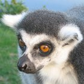
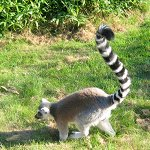
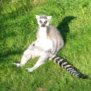

狐猴是小型靈長目動物，又稱「原猴亞目」，意思是「猴子之前」。狐猴原生於非洲東海岸的馬達加斯加和鄰近的葛摩。體型從小到大，最大約 7～9 公斤重。狐猴的平均壽命為 18 年，是靈長目最短壽的動物。
狐猴的長相？
狐猴吃什麼？
狐猴如何溝通？
狐猴共有多少種類？
狐猴是一種靈長目動物，與人猿和人類皆有親緣關係。由於大多數狐猴的鼻子長而尖，因此嗅覺靈敏，皮毛的顏色從紅褐色至灰色不等。體型最小的狐猴為鼠狐猴，重約 28 公克；最大的狐猴為大狐猴，最重可達 9 公斤。狐猴的嗅覺和視覺皆十分敏銳，夜間視力也十分良好。

大部分狐猴的食物是水果、葉片和其他的雨林植物。有些狐猴吃花蜜，有些則只以竹子為食。指猴喜歡用爪子般的中指來從樹洞挖昆蟲來吃，灰狐猴喜歡在樹頂吃竹筍，環尾狐猴喜吃花草和小動物，住在動物園的狐猴則可享用素食餅乾等佳餚。

狐猴以嗅覺溝通。其臀部和腳上有分泌腺，可以在碰觸到的表面留下氣味。當狐猴聞到這種氣味時，便知道有別的狐猴來過。同時，狐猴也會在空中搖擺粗大的尾巴來溝通。在樹與樹之間跳躍時尾巴可以幫助保持平衡。
許多科學家認為目前約有 88 種狐猴，共分成 5 科。以下是關於狐猴的一些趣味知識：
| 狐猴 | 趣味知識 |
|---|---|
| 鼠狐猴 | 最小的靈長目，夜行性動物，棲息在樹林中。 |
| 環尾狐猴 | 黑白相間的尾巴使其成為最著名的狐猴。高度社會化，最多可有 30 隻狐猴一起群居生活，母系社會。 |
| 鼬狐猴 | 夜行性動物，棲息在樹林中。在地面時，會像袋鼠一樣地跳躍。 |
| 大狐猴 | 最大的狐猴之一。日行性動物。雙腿強健，可以在樹上跳到 9 公尺遠。 |
| 指猴 | 最大型的夜行性靈長目。通常是獨居（而非群居）。長得像嚙齒類動物。 |
科學家之前認為，在現名為馬達加斯加的區域與非洲大陸分離，形成小島之前，狐猴曾出現在非洲大陸。然而，最近的研究顯示早在狐猴進化以前，馬達加斯加就脫離了非洲大陸。因此，科學家現在相信狐猴可能是透過草木飄洋過海的來到馬達加斯加，之後便與其他的靈長目分隔兩地，在馬達加斯加定居並進化。
獨自居住在馬達加斯加的狐猴進化成令人驚奇的物種。化石遺跡顯示與現存的狐猴相比，某些物種體型相當龐大。其中一種絕種的狐猴更估計達 160～200 公斤重，相當於成年的雄性大猩猩重量。
注意：下列欄位只供練習；不會收集使用者意見。